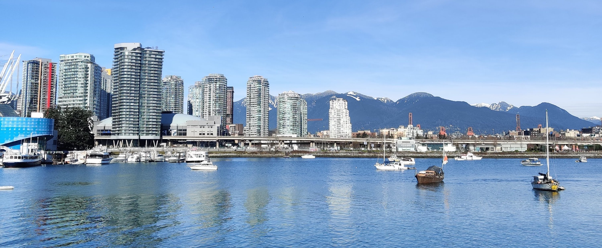

<div class="contentBox animate__fadeIn">
    

    <div class="block">
        <h1>Economy</h1>

        <p>
            Canada is the world's ninth-largest economy as of 2021, with a nominal GDP of approximately US$2.015 trillion. It is one of the least corrupt countries in the world, and is one of the world's top ten trading nations, with a highly globalized economy. Canada has a mixed economy ranking above the U.S. and most western European nations on The Heritage Foundation's Index of Economic Freedom, and experiencing a relatively low level of income disparity. The country's average household disposable income per capita is "well above" the OECD average. The Toronto Stock Exchange is the ninth-largest stock exchange in the world by market capitalization, listing over 1,500 companies with a combined market capitalization of over US$2 trillion.

            <br><br>

            In 2018, Canadian trade in goods and services reached CA$1.5 trillion. Canada's exports totalled over CA$585 billion, while its imported goods were worth over CA$607 billion, of which approximately CA$391 billion originated from the United States, CA$216 billion from non-U.S. sources. In 2018, Canada had a trade deficit in goods of CA$22 billion and a trade deficit in services of CA$25 billion.

            <br><br>

            Since the early 20th century, the growth of Canada's manufacturing, mining, and service sectors has transformed the nation from a largely rural economy to an urbanized, industrial one. Like many other developed countries, the Canadian economy is dominated by the service industry, which employs about three-quarters of the country's workforce. However, Canada is unusual among developed countries in the importance of its primary sector, in which the forestry and petroleum industries are two of the most prominent components.

            <br><br>

            Canada's economic integration with the United States has increased significantly since World War II. The Automotive Products Trade Agreement of 1965 opened Canada's borders to trade in the automobile manufacturing industry. In the 1970s, concerns over energy self-sufficiency and foreign ownership in the manufacturing sectors prompted Prime Minister Pierre Trudeau's Liberal government to enact the National Energy Program (NEP) and the Foreign Investment Review Agency (FIRA). In the 1980s, Prime Minister Brian Mulroney's Progressive Conservatives abolished the NEP and changed the name of FIRA to Investment Canada, to encourage foreign investment. The Canada – United States Free Trade Agreement (FTA) of 1988 eliminated tariffs between the two countries, while the North American Free Trade Agreement (NAFTA) expanded the free-trade zone to include Mexico in 1994 (later replaced by the Canada–United States–Mexico Agreement). Canada has a strong cooperative banking sector, with the world's highest per-capita membership in credit unions.

            <br><br>

            

            Canada is one of the few developed nations that are net exporters of energy. Atlantic Canada possesses vast offshore deposits of natural gas, and Alberta also hosts large oil and gas resources. The vastness of the Athabasca oil sands and other assets results in Canada having a 13 percent share of global oil reserves, comprising the world's third-largest share after Venezuela and Saudi Arabia. Canada is additionally one of the world's largest suppliers of agricultural products; the Canadian Prairies are one of the most important global producers of wheat, canola, and other grains. The federal Department of Natural Resources provides statistics regarding its major exports; the country is a leading exporter of zinc, uranium, gold, nickel, platinoids, aluminum, steel, iron ore, coking coal, lead, copper, molybdenum, cobalt, and cadmium. Many towns in northern Canada, where agriculture is difficult, are sustainable because of nearby mines or sources of timber. Canada also has a sizeable manufacturing sector centred in southern Ontario and Quebec, with automobiles and aeronautics representing particularly important industries.
        </p>
    </div>

</div>